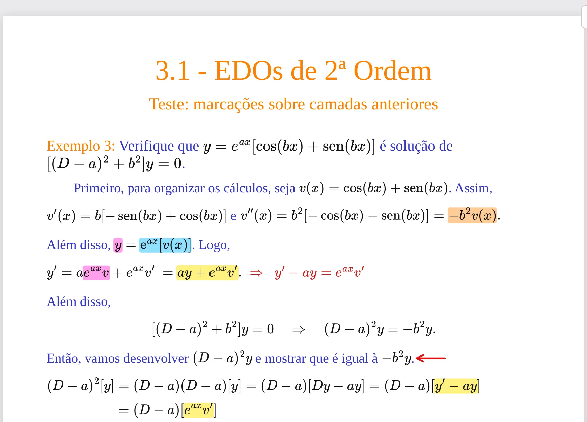
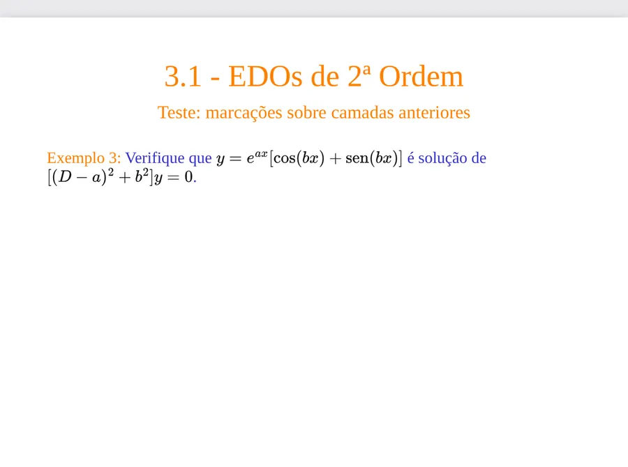
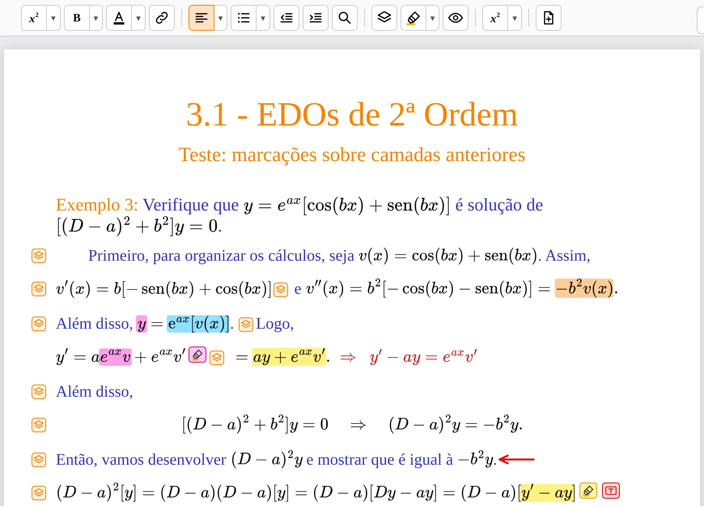
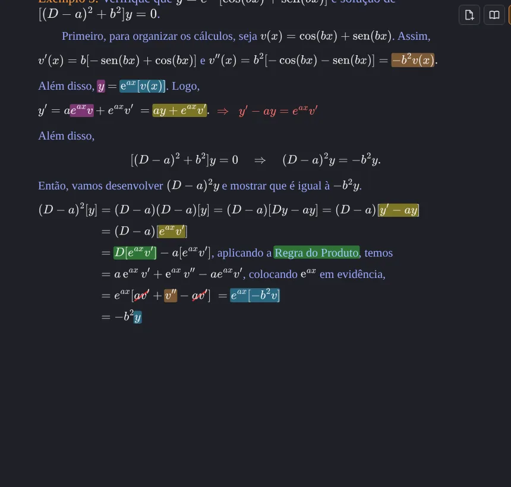
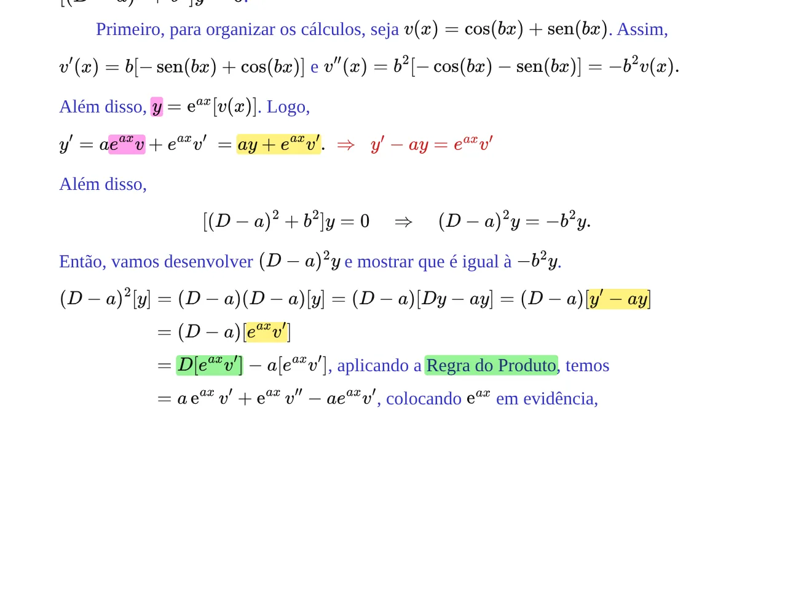
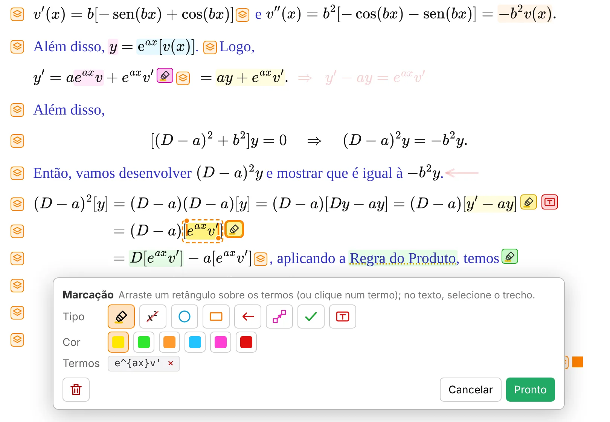
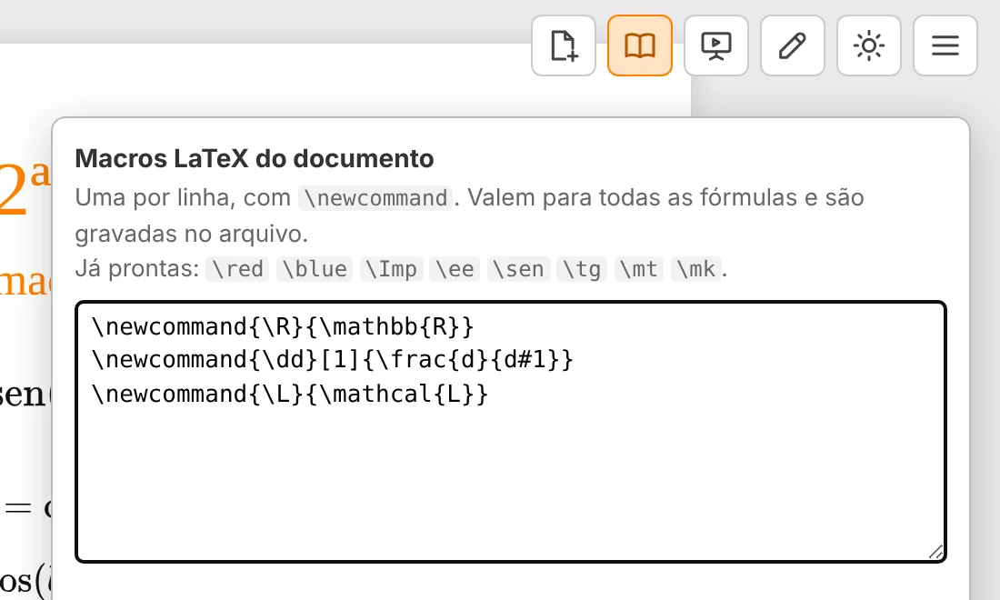

Um arquivo, três modos
A coluna de ícones à direita da tela (leitura, apresentação, edição, de cima para baixo) troca de modo na hora, sem recarregar a página e sem perder o lugar onde você está.
Leitura
O modo padrão. Páginas A4 em rolagem contínua, com tudo visível. É o texto que fica para quem lê depois, com sumário lateral e zoom normal do navegador.


Apresentação
As camadas aparecem uma a uma, como numa explicação feita no quadro. Avance com →, Espaço ou o passador de slides; volte com ←. A página rola sozinha.


Edição
Você edita direto na página, como num processador de texto, com fórmulas em LaTeX. Cada camada aparece como uma pequena âncora laranja na margem.


Não é uma sequência de slides. O documento é sempre o mesmo texto corrido: a apresentação só decide quando cada parte aparece. Por isso quem lê depois encontra exatamente o que foi apresentado, e não um resumo dos slides.
Tema escuro e menu
No canto superior direito, o botão do tema mostra o tema atual (sol no claro, lua no escuro) e, clicado, troca para o outro: o papel, o texto, as fórmulas e as cores das marcações se adaptam. Na primeira vez, o Strata segue o tema do sistema; depois, a escolha fica lembrada no navegador, só na sua tela, e o arquivo não muda. Ao lado fica o menu ☰, com Salvar para usar offline e o link para esta página; no modo edição, ele também tem Adicionar macros LaTeX e a opção Enter cria camada (ligada, cada Enter no texto começa uma camada nova), e o botão de Novo documento aparece à esquerda do tema.


O conceito de camada
Uma camada é um pedaço do documento que aparece de uma vez no modo apresentação. As camadas seguem a ordem do texto: a primeira que aparece é a que está mais acima na página.
- Qualquer trecho pode ser uma camada: um parágrafo, uma equação, o fim de uma linha, uma linha de igualdades. O que não está em camada nenhuma (um título, o enunciado) já aparece desde o início.
- Uma camada começa no ponto do cursor. No início da linha, ela pega o bloco inteiro; no meio da linha, pega do cursor até o fim do parágrafo. Assim dá para revelar uma conta pela metade.
- Camadas podem andar juntas. Ao remover uma âncora, a camada se junta à anterior e as duas passam a aparecer no mesmo passo.
- Camadas também podem marcar o que já está escrito, sem reescrever nada: destacar um termo, riscar o que se cancela, apontar com uma seta. Como quem volta com o giz a uma conta já escrita no quadro.


Tipos de camada
Há dois tipos de camada. Cada uma tem a sua âncora no modo edição, no ponto do texto em que vai aparecer.
Camada de conteúdo
Faz aparecer texto, fórmulas, notas laterais ou figuras novas. É a camada comum, como cada linha nova escrita no quadro.
Camada de marcação
Desenha sobre termos que já estão na página, numa fórmula ou no texto. A marcação aparece no momento escolhido e fica até o fim. Há oito tipos:
As marcações usam seis cores (amarelo, verde, laranja, azul, rosa e vermelho), e a anotação de texto usa as cores do texto.
O básico do editor visual
Clique no lápis (ou Ctrl+\) e escreva. Não é preciso mexer em código.
- Texto: clique e digite. A barra de cima tem estilos de parágrafo (título, subtítulo, equação, citação), negrito, itálico, cores, links, listas, alinhamento e recuo.
- Fórmulas: Alt+X insere uma fórmula na linha; o menu de equações insere uma destacada. Um clique numa fórmula a seleciona; dois cliques abrem o LaTeX, com prévia.
- Camada de conteúdo: ponha o cursor onde a camada deve começar e clique no botão de camada (Alt+C). Arraste a âncora para mudar onde ela começa.
- Camada de marcação: ponha o cursor no ponto em que a marcação deve aparecer, escolha o tipo no botão de marcação e arraste de termo a termo na fórmula (no texto, selecione o trecho). Clique na âncora para mudar o tipo, a cor ou apagar.
- Salvar: o disquete aparece quando há alterações; Ctrl+S grava o próprio arquivo.


Atalhos
| → Espaço PageDown / ← PageUp | Próxima / camada anterior, no modo apresentação |
| Ctrl+\ | Entra e sai do modo edição |
| Alt+X | Fórmula na linha |
| Alt+C | Camada no ponto do cursor |
| Ctrl+Q | Mostra ou recolhe as âncoras |
| Ctrl+Z / Ctrl+Y | Desfaz / refaz |
| Ctrl+K · Ctrl+H | Link · localizar e substituir (também no LaTeX das fórmulas) |
| Ctrl+S | Salva o arquivo |
Macros LaTeX pré-carregadas
As fórmulas são LaTeX, desenhadas pelo MathJax 3. Além de tudo o que o MathJax entende (frações, matrizes, cases, aligned e os demais ambientes do amsmath), o Strata já traz estas macros:
\red{...} | \(\red{y = 2x}\) | Trecho em vermelho |
\blue{...} | \(\blue{y = 2x}\) | Trecho em azul |
\Imp | \(a = b \Imp b = a\) | Seta de implicação, com espaço dos dois lados |
\ee | \(\ee^{ax}\) | O e da exponencial, em tipo reto |
\sen, \tg | \(\sen x,\ \tg x\) | Seno e tangente, com os nomes em português |
\mt{...} | \(x > 0 \mt{ se } t > 1\) | Texto comum dentro da fórmula |
\mk{nome}{...} | \(\mk{m1}{y'} = ay\) | Rótulo de um termo para as marcações. Não muda a aparência, e o editor o escreve sozinho quando você marca um termo. |
Suas próprias macros
O jeito mais simples é pelo próprio Strata: no modo edição, no menu ☰, escolha Adicionar macros LaTeX…, escreva um \newcommand por linha e clique em Aplicar. Elas se somam às que o documento já tem, as fórmulas são redesenhadas na hora e as macros vão junto quando você salva o arquivo.

Por baixo, elas ficam num bloco no <head> do documento, que também pode ser escrito à mão. Ele vale antes da primeira fórmula, nos três modos e no editor de fórmulas:
<script type="text/x-tex-macros">
\newcommand{\dd}[1]{\frac{d}{d#1}}
\newcommand{\R}{\mathbb{R}}
</script>
Assim um conjunto de macros pode ser compartilhado entre vários documentos, colando o mesmo bloco em cada um. É o caso do exemplo, que traz o bloco do fol-MathJax.sty, o arquivo com todas as macros do Preambulo (o diálogo Adicionar macros LaTeX tem o mesmo link).
Começar
- Abra o exemplo, entre no modo edição (lápis) e clique em Novo documento, no canto superior direito. Abre uma página em branco, já no modo edição, com as mesmas macros do exemplo (o bloco do Preambulo).
- Escreva o texto e salve com Ctrl+S. No Chrome e no Edge, escolha onde gravar; nos outros navegadores, o arquivo é baixado.
- Para continuar depois, abra o arquivo no navegador (dois cliques) e clique no lápis. Para publicar, ponha o arquivo em qualquer site ou plataforma que aceite HTML, inclusive dentro de um iframe.
O que fica no arquivo
Só o seu conteúdo: texto, fórmulas em LaTeX e a marcação das camadas. O editor vem do Strata, então uma versão nova do editor vale para todos os documentos, e os arquivos antigos continuam funcionando.
A estrutura do HTML está descrita no README, para quem quiser escrever à mão.
Sem internet
O editor e o MathJax vêm da internet. Para trabalhar sem ela, há dois caminhos:
- Um documento só: no menu ☰ de qualquer documento, Salvar para usar offline baixa um arquivo único, com o Strata e o MathJax dentro (cerca de 2,5 MB). Abre sem internet, nos três modos, e pode ser editado e salvo de novo.
- Uma pasta para escrever: o pacote offline (.zip) traz o
strata.js, ostrata.css, o MathJax e o exemplo. Os documentos novos, salvos na mesma pasta, usam esses arquivos.